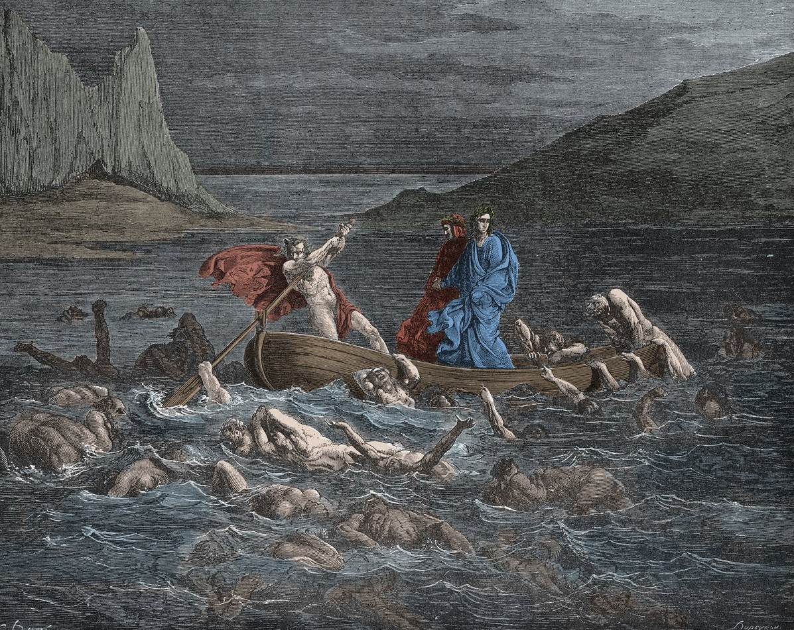

Dante e Virgilio varcano la porta dell'Inferno, su cui campeggia la terribile scritta "Lasciate ogne speranza, voi ch'intrate". Si ritrovano nell'Antinferno, tra gli Ignavi, coloro che in vita non scelsero né il bene né il male, inseguiti da vespe e mosconi. Giunti alla riva del fiume Acheronte, incontrano il traghettatore demoniaco Caronte, che inizialmente rifiuta di far passare Dante in quanto vivo. Un terremoto e un improvviso svenimento chiudono il canto.
Dante si risveglia nel primo cerchio, il Limbo, dove risiedono le anime dei non battezzati e dei giusti nati prima di Cristo. Non subiscono pene fisiche, ma provano il dolore eterno di non poter vedere Dio. Qui Dante viene accolto dai grandi poeti dell'antichità (Omero, Orazio, Ovidio e Lucano) ed entra nel "nobile castello", dove osserva gli "spiriti magni": filosofi, eroi e scienziati che hanno illuminato la storia umana con la sola luce della ragione.
